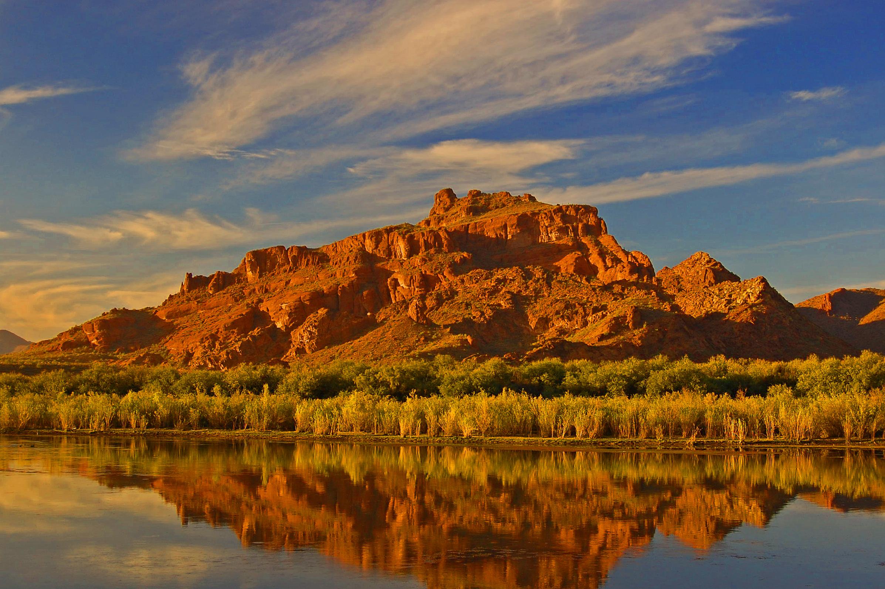
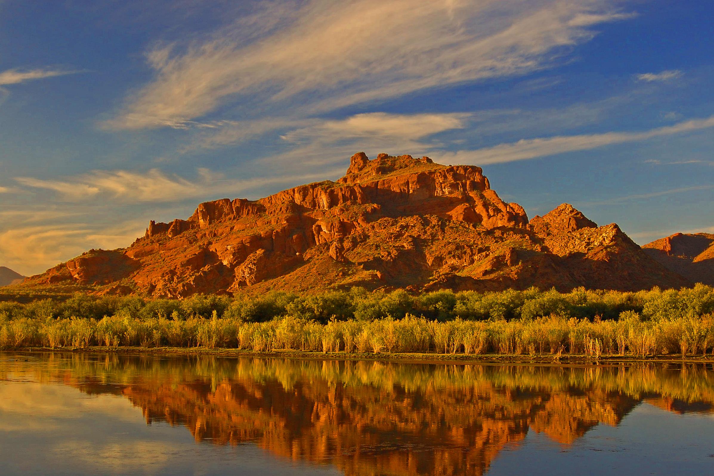

North America
Its waters are the most amazing colour, a vivid shade of turquoise that changes in intensity through the summer as the glaciers melt. Set in the rugged Valley of the Ten Peaks, Moraine Lake is surrounded by mountains, waterfalls, and rock piles, creating a scene so stunning it almost seems unreal. Sit lakeside and absorb the sights and pure mountain air, or explore further by canoeing and hiking. It’s an icon jaw-dropping place that is sure to leave a lasting impression.
Rocky Mountains

Rocky Mountains
Rocky Mountain scenery and abundant wildlife – from bighorn sheep to bears - are the star attractions of Banff National Park. Plunge into the Rockies on foot or by bike on an expansive network of trails. Drive past crystalline lakes and glaciers on hundreds of kilometres of paved scenic parkways or get back to nature at 14 diverse campgrounds. History lovers can explore national historic sites, while winter brings skiing, snowshoeing and sightseeing.
Book a TripAlaskan Mountains
Alaskan Mountains
You have seen photos of the lake but they haven’t prepared you for how it feels to experience it yourself. Rounding the corner, the sight of the emerald green water and rugged peaks and glaciers hits you viscerally. You’ve never seen anything so dramatically beautiful. Late in the day, with the glowing sun dropping behind Mount Victoria, it is quiet and still. As you wander around the lakeside path it seems like the whole scene is for just you to enjoy. It is a feeling you will remember forever.
Book a TripSierra Madre
 

Sierra Madre
Travel in the depths of the canyon on wide trails and narrow bridges with railings that lead to the Lower Falls and to the spectacular 30 metre-high Upper Falls. For a unique perspective, continue 265 m further to the viewpoint at the top of the upper falls. Beyond the falls, a trail continues up and over a forested ridge to a meadow where water bubbles from deep below the Earth’s surface into shallow pools called the Ink Pots.
Book a Trip